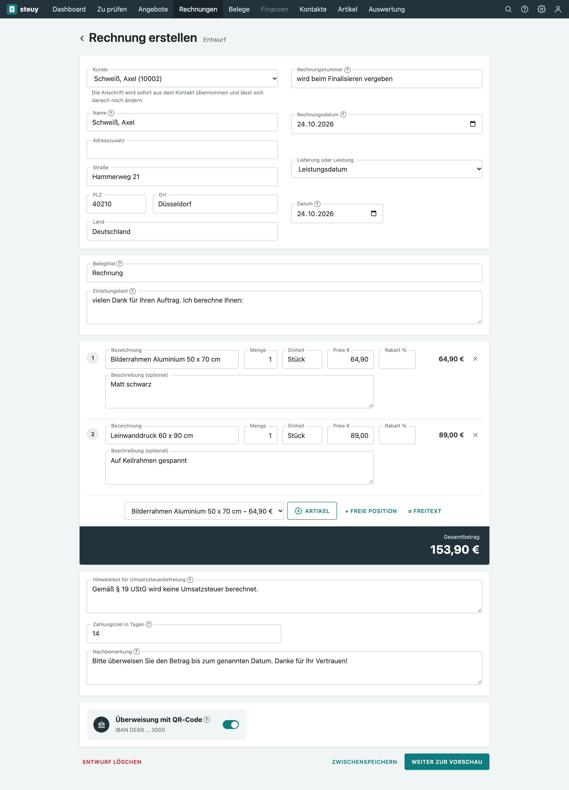
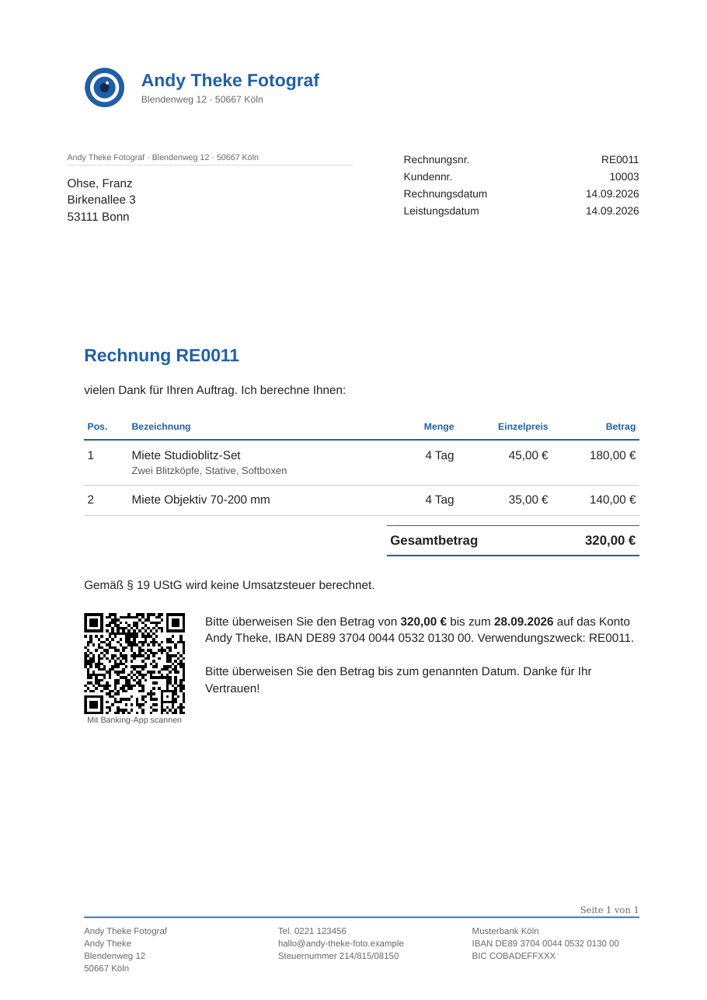
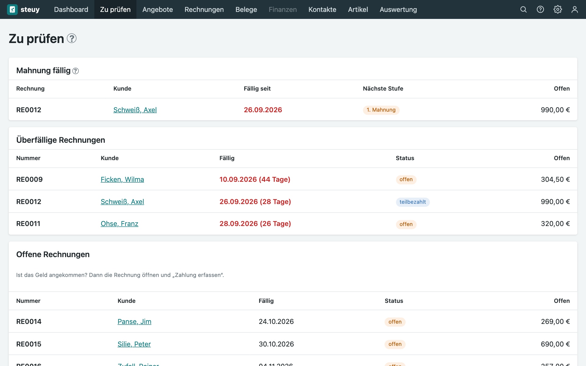

Selbst gehostete Buchhaltungssoftware für Kleinunternehmer
steuy ist ein kostenloses Rechnungsprogramm und Buchhaltungssystem für Kleingewerbe nach § 19 UStG. Rechnungen, Angebote, Mahnungen, Belege und Einnahmen-Überschuss-Rechnung (EÜR) in einer Software, die auf deinem eigenen Rechner läuft. Quelloffen, ohne Cloud und ohne Abo.
Buchhaltung für das Kleingewerbe, die dir gehört
Selbst gehostet statt Cloud
steuy läuft auf deinem Thin Client, Mini-PC oder Server. Deine Buchhaltungsdaten bleiben bei dir, es gibt keine Weitergabe und kein Kundenkonto.
Kostenlos und quelloffen
Keine Lizenzgebühr, kein Abo. Den Quellcode kannst du lesen, prüfen und für dein Gewerbe anpassen.
Für Einsteiger gemacht
Ein Rundgang erklärt jede Funktion, Hilfetexte an den Feldern erklären Begriffe wie EÜR und Zuflussprinzip in einfachen Worten.
Kleinunternehmerregelung eingebaut
Der Hinweis nach § 19 UStG steht automatisch auf jeder Rechnung, das Dashboard zeigt die Umsatzgrenzen im Blick.
Funktionen: Rechnungswesen für Selbstständige
Rechnungen und Angebote
Rechnungen, Angebote, Lieferscheine und Korrekturen mit PDF/A, E-Mail-Versand und QR-Code für die Überweisung. Eigenes Drucklayout mit Logo.
Zahlungen und Mahnwesen
Zahlungseingänge und Teilzahlungen erfassen, offene Posten im Blick, Zahlungserinnerung und Mahnstufen von Hand oder automatisch.
Belege und Scanner
Belege hochladen oder direkt vom Scanner einlesen. Die Texterkennung schlägt Betrag, Datum und Lieferant vor.
EÜR und Dashboard
Einnahmen-Überschuss-Rechnung nach Zuflussprinzip, Jahresübersicht, Jahresziel und die Werte für die Anlage EÜR.
Umzug von Lexware
Import aus dem DATEV-Archiv und aus CSV-Zahlungslisten, geprüft und als Entwürfe angelegt.
Sicher und nachvollziehbar
Festgeschriebene Buchungen sind unveränderlich (GoBD), Rollen und Rechte, Zwei-Faktor-Anmeldung, Protokoll aller Änderungen.
So sieht steuy aus



Buchhaltung selbst hosten: so installierst du steuy
steuy läuft auf jedem kleinen Linux-Rechner (64 Bit, ab 1 GB RAM), der dauerhaft eingeschaltet bleibt, zum Beispiel einem gebrauchten Dell Wyse 5070.
- Thin Client oder Mini-PC, ohne Vorkenntnisse: Schritt-für-Schritt-Anleitung
- Proxmox-Container: ein Befehl, fertig
- Docker:
git clone https://github.com/faolan-exe/Steuy.git, danndocker compose up -d --build(Details in der Anleitung)
Mindestanforderungen und Hardware-Beispiele: README.
Häufige Fragen zu steuy
Was ist steuy?
steuy ist eine kostenlose, selbst gehostete Buchhaltungssoftware für Kleinunternehmer und Kleingewerbe nach § 19 UStG. Du schreibst Angebote, Rechnungen und Lieferscheine, verwaltest Belege und Zahlungen, mahnst offene Rechnungen und bekommst am Jahresende die Werte für die Anlage EÜR. Die Software läuft auf deinem eigenen Rechner, deine Daten verlassen ihn nicht.
Für wen ist steuy gedacht?
Für Kleinunternehmer, Kleingewerbetreibende, Freiberufler und Selbstständige, die die Kleinunternehmerregelung (§ 19 UStG) nutzen und ihren Gewinn per Einnahmen-Überschuss-Rechnung (EÜR) ermitteln, zum Beispiel Fotografen, Handwerker, Berater, Designer, Entwickler und kleine Online-Shops.
Was kostet steuy?
Nichts. steuy ist kostenlos und ohne Abo. Du brauchst nur einen kleinen Rechner, auf dem es dauerhaft läuft, zum Beispiel einen gebrauchten Thin Client oder Mini-PC.
Ist steuy Open Source?
steuy ist quelloffen (Source-available): Du kannst den Quellcode lesen, ändern und im eigenen Gewerbe nutzen. Die Lizenz ist die PolyForm Shield License 1.0.0. Sie verbietet nur, steuy oder eine Abwandlung als konkurrierendes Produkt oder Dienst anzubieten. Eine Open-Source-Lizenz im Sinne der OSI ist das deshalb nicht.
Was heißt selbst gehostet?
steuy läuft auf einem Rechner, den du selbst betreibst, zum Beispiel zu Hause im Heimnetz. Es gibt keine Cloud, kein Kundenkonto bei uns und keine Weitergabe deiner Buchhaltungsdaten. Du bist selbst für Betrieb und Sicherung verantwortlich, dafür gehören die Daten dir.
Brauche ich Linux-Kenntnisse?
Nein. Eine Schritt-für-Schritt-Anleitung führt vom leeren Thin Client oder Mini-PC bis zum laufenden steuy. Wer schon einen Proxmox- oder Docker-Server hat, installiert mit einem Befehl.
Kann ich von Lexware zu steuy umziehen?
Ja. steuy importiert das DATEV-Archiv und die CSV-Zahlungslisten aus Lexware, prüft die Daten und legt sie als Entwürfe an.
Ist steuy GoBD-konform?
steuy setzt die technischen Anforderungen der GoBD an Unveränderbarkeit und Nachvollziehbarkeit um: Festgeschriebene Buchungen und Rechnungen lassen sich nicht ändern oder löschen, Belege werden mit Prüfsumme abgelegt, jede Änderung wird protokolliert. Eine Zertifizierung gibt es nicht, die Verantwortung für die ordnungsgemäße Buchführung bleibt bei dir.
Kann ich mit einem Scanner direkt Belege erfassen?
Ja. Der Scan-Eingang nimmt Scans deines Scanners (zum Beispiel Brother ADS-1800W) über eine eingebaute Netzwerkfreigabe entgegen und legt sie mit Texterkennung als Belege an. Einschalten geht in den Einstellungen mit einem Haken.
Kann ich steuy ausprobieren?
Ja, in der Live-Demo unter steuy.philsit.de. Sie läuft ohne Anmeldung mit einer erfundenen Musterfirma und wird alle 15 Minuten zurückgesetzt.
steuy in English
steuy is a free, self-hosted accounting and invoicing application for small businesses and sole proprietors in Germany who use the small-business scheme (Kleinunternehmerregelung, § 19 UStG) and report profit by simple cash-basis accounting (EÜR). Write quotes, invoices and delivery notes, track payments and dunning, manage receipts (including direct scan-to-folder from a network scanner) and get the figures for the annual tax form. It runs on your own hardware, for example a small thin client, your data never leaves your server. The source code is available under the PolyForm Shield License 1.0.0 (source-available, not OSI open source). The user interface is in German. View on GitHub.